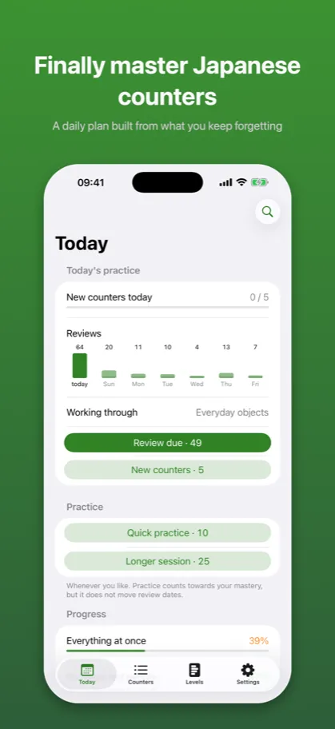
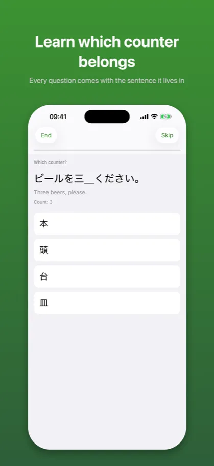
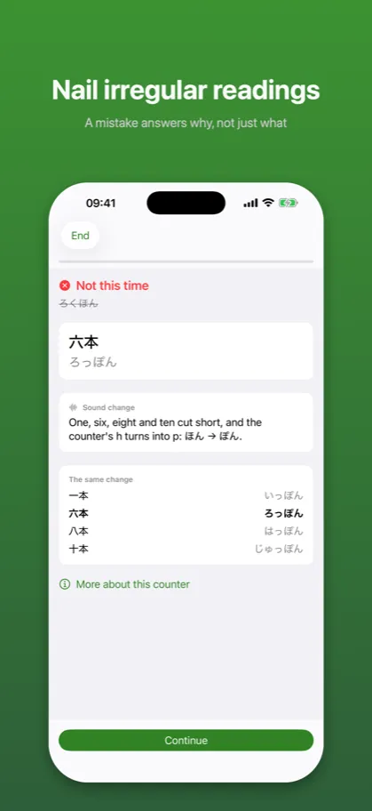

Kazoekata: Japanese Counters数え方
Counting, kanji and drills
App Store →Free app with an in-app purchase
Stop guessing how Japanese counters are read. 三本 is さんぼん, 六本 is ろっぽん – and there is a rule behind it.
What it looks like

A daily plan built from what you keep forgetting

Every question comes with the sentence it lives in

A mistake answers why, not just what
Description from the store
Japanese counting is not a number stuck onto a noun. Three books is 三冊, three cats is 三匹, three long thin things is 三本 – and 本 does not even sound the same at three as it does at six.
Kazoekata teaches the part that actually takes time: not the list of counters, but how they behave.
THREE SKILLS, MEASURED SEPARATELY
Knowing that books take 冊 is one thing. Saying 八冊 without stopping is another. Hearing ろっぷん and knowing it means six minutes is a third.
Most apps average these into one number per counter. This one keeps them apart, because that is where the useful sentence lives:
本 Counter choice 95 %
Reading 61 %
After that you know what to open. After "本 78 %" you know nothing.
THE PATTERN, NOT THE FLASHCARD
一本 いっぽん, 三本 さんぼん, 六本 ろっぽん are not three unrelated facts. One, six, eight and ten cut the number short and turn h into p; three voices it. That is one rule with three faces, and after a week it stops needing thought.
When you get something wrong, the app says which rule you met – and shows the other places the same change happens.
FIVE WAYS TO BE ASKED
Which counter belongs. How a written form is read. Type the reading. Write the whole expression. Say what a reading means. Each one measures something the others cannot.
WRONG ANSWERS THAT TEACH
The wrong options are not random. They are what the engine produces with the sound changes switched off – さんほん for 三本, よんじ for 四時, いちにん for 一人. The mistake you would actually make, offered next to the form you should learn.
HONEST ABOUT WHAT IS UNCERTAIN
Some readings genuinely have two forms. 三階 is さんがい and さんかい; 三足 is said both ways and the dictionaries disagree. Those cells are never turned into a four-button question, because a button holding correct Japanese marked wrong teaches an untruth whichever one you pick. They are shown side by side instead, with the reason.
FIVE LEVELS, NOT JLPT
Counters do not split along exam levels. 本 is in every beginner textbook and 六本 still catches people after two years. The levels follow how the difficulty actually builds: numbers and people, everyday objects, time and calendar, the irregular readings, then everything at once.
Levels four and five bring no new counters. The fourth gathers the forms you cannot work out from a rule – ひとり, ついたち, よじ, はたち – and drills them together.
REVIEWS AND WEAK SPOTS
That books take 冊 is a fact to remember, and facts fade unless they come back on a schedule. That ほん becomes ぽん after six is a skill, and skills need repetition where they break. Kazoekata does both.
A weak spot is not "本". It is "本 with the numbers that cut short" – because if you missed 六本 you will miss 八本 too, and the session knows that before you do.
ENGLISH AND POLISH
Interface and content switch independently. A Polish menu with English descriptions is a deliberate combination.
PRIVATE BY CONSTRUCTION
No account, no analytics, no ads, no network. The shipped app makes no request of any kind except to the App Store for the purchase itself. Everything stays on your phone.
FREE AND PREMIUM
Levels 1 and 2 are free in full – twenty-two counters, quick practice, reviews and progress. That is enough to count what is in your flat. One purchase opens levels 3 to 5, the complete set of thirty-eight counters, the irregular-reading training and weak-spot practice. No subscription.
Also from the same author: Kaname – Japanese Grammar, Katsuyokei – Conjugation, and Joshi – Japanese Particles.
The description above is the same text that stands on the App Store product page – it comes from the same file.
Common questions
What does Kazoekata teach?
Japanese counting is not a number stuck onto a noun. Three books is 三冊, three cats is 三匹, three long thin things is 三本 – and 本 does not even sound the same at three as it does at six.
Kazoekata teaches the part that actually takes time: not the list of counters, but how they behave.
What does Kazoekata cost?
Levels 1 and 2 are free in full – twenty-two counters, quick practice, reviews and progress. That is enough to count what is in your flat. One purchase opens levels 3 to 5, the complete set of thirty-eight counters, the irregular-reading training and weak-spot practice. No subscription.
Also from the same author: Kaname – Japanese Grammar, Katsuyokei – Conjugation, and Joshi – Japanese Particles.
Does it work without an account or a network?
No account, no analytics, no ads, no network. The shipped app makes no request of any kind except to the App Store for the purchase itself. Everything stays on your phone.
What languages does it support?
Interface and content switch independently. A Polish menu with English descriptions is a deliberate combination.
Documents
The other apps
- Kaname: Japanese Grammar — JLPT practice: N5 N4 N3 N2 N1
- Bunmyaku: Japanese Reading — Vocabulary, kanji, furigana
- Katsuyokei: Conjugation — Verbs, adjectives and drills
- Joshi: Japanese Particles — Grammar drills for the JLPT
- Kuzushi: Casual Japanese — Anime, drama and slang
- Shindan: Japanese Level Test — JLPT placement: N5 N4 N3 N2 N1
- Keigo: Polite Japanese — Formal Japanese for work
- Kifuku: Japanese Pitch Accent — Pronunciation and listening
- Onomatope: Japanese Mimetics — Manga and anime vocabulary